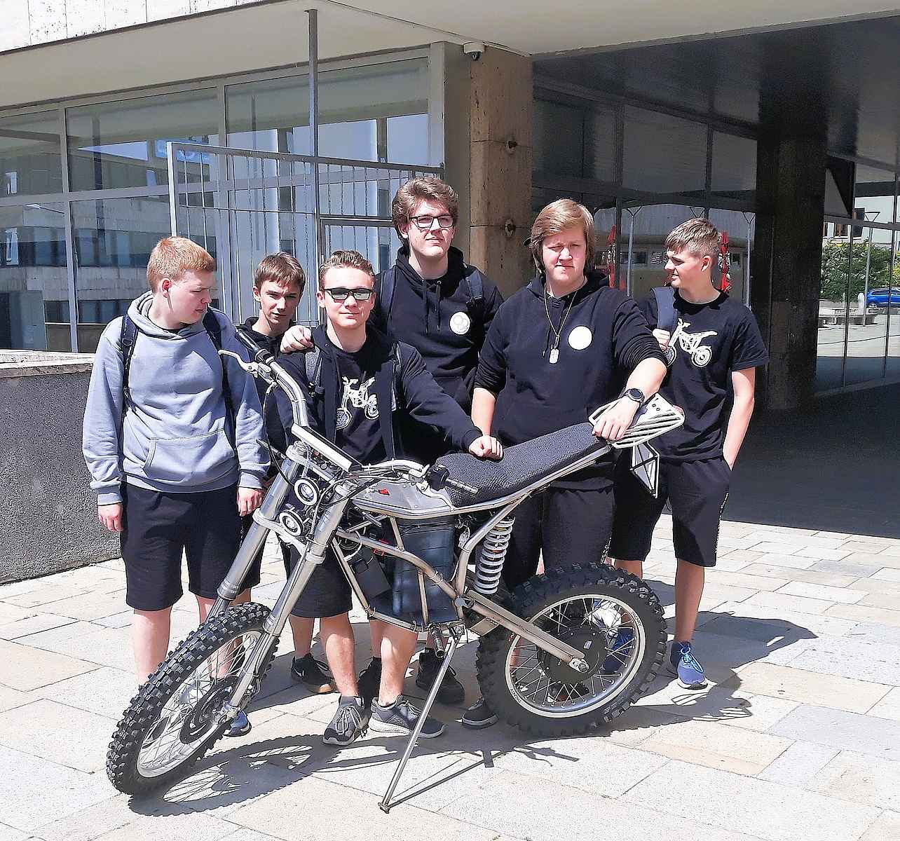
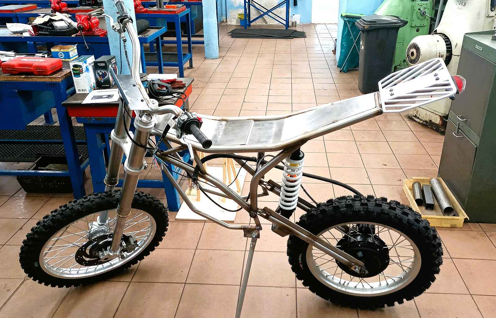
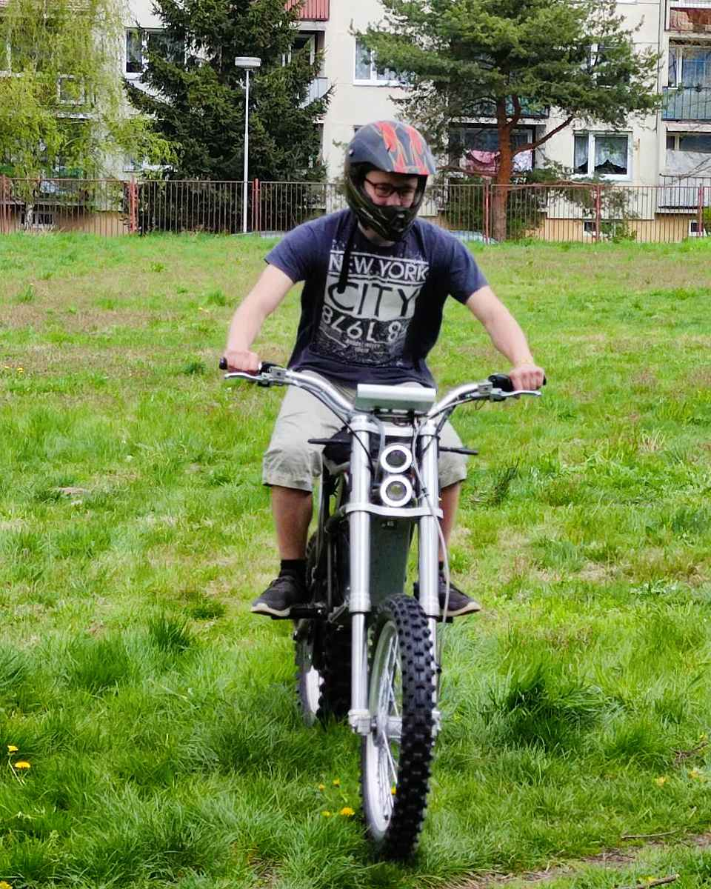
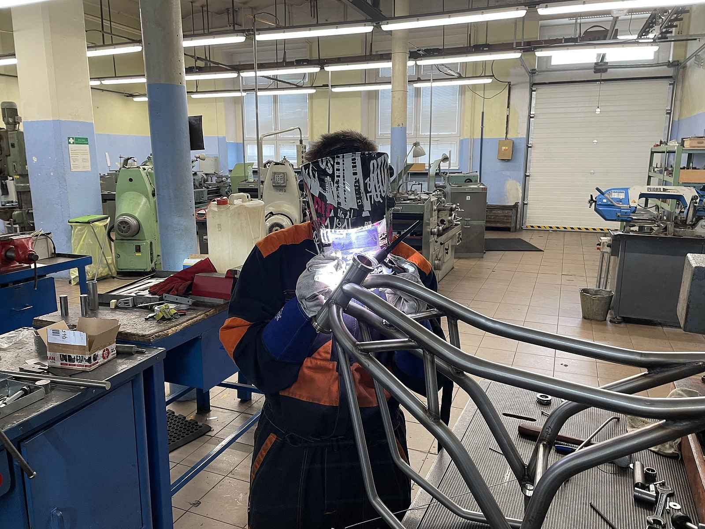
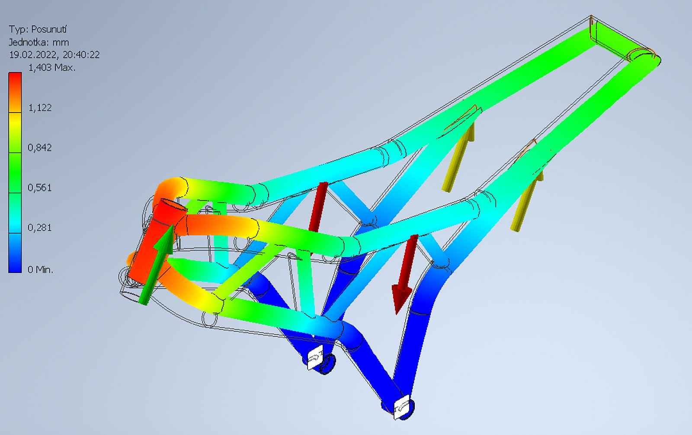

V rámci soutěže „Dobrá škola - Moderní škola 4.0“, kterou každoročně pořádá Ústecký kraj, postavili žáci VOŠ, SPŠ a SOŠ Varnsdorf ve spolupráci se ZŠ náměstí E. Beneše elektromotorku Zidan. Cílem soutěže je propagace a popularizace odborného vzdělávání, které má úzkou vazbu na průmysl a technologie.
Letošním oborem pro řešení byla elektrotechnika a kluci realizovali náročný projekt stavby funkční elektromotorky ve skutečné velikosti a pojmenovali ji ZIDAN. Je až neuvěřitelné, že si sami vyrobili kompletní rám, sestavili podvozek a navrhli a zrealizovali elektroinstalaci.
Dále pak vytvořili přístrojovou desku s vlastním uživatelským prostředím a webové rozhraní, které lze instalovat v jakémkoli chytrém zařízení. Výsledkem obdivuhodné půlroční intenzivní práce je terénní motocykl se jmenovitým výkonem 3kW, kapacitou baterie 1.5kWh, nominálním napětím zdroje 52V a dojezdem až 50km.
Komunikační jednotka motocyklu umožňuje bezdrátové sledování polohy GPS a stavu vybraných SOŠ Varnsdorf a 2 žáci ze ZŠ Varnsdorf, náměstí E. Beneše.

Tým studentů kteří pracovali na motorce
| Parametr | Hodnota |
|---|---|
| Jmenovitý výkon | 3 kW |
| Kapacita baterie | 1.5 kWh |
| Nominální napětí | 52 V |
| Maximální dojezd | až 50 km |
| Chytré funkce | GPS tracking, Webové rozhraní |



